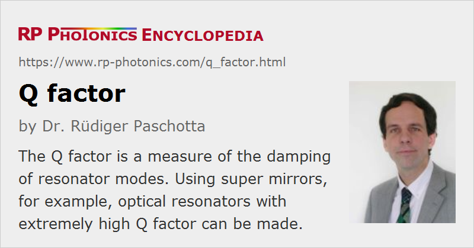

Q Factor
Definition: a measure of the damping of resonator modes
German: Gütefaktor
Formula symbol: Q
Units: (dimensionless number)
How to cite the article; suggest additional literature
Author: Dr. Rüdiger Paschotta
The Q factor (quality factor) of a resonator is a measure of the strength of the damping of its oscillations, or for the relative linewidth. The term was originally developed for electronic circuits, e.g. LC circuits, and for microwave cavities, but later also became common in the context of optical resonators.
There are actually two different common definitions of the Q factor of a resonator:
- Definition via energy storage: the Q factor is 2π times the ratio of the stored energy to the energy dissipated per oscillation cycle, or equivalently the ratio of the stored energy to the energy dissipated per radian of the oscillation. For a microwave or optical resonator, one oscillation cycle is understood as corresponding to the field oscillation period, not the round-trip period.
- Definition via resonance bandwidth: the Q factor is the ratio of the resonance frequency ν0 and the full width at half-maximum (FWHM) bandwidth δν of the resonance:
Both definitions are equivalent only in the limit of weakly damped oscillations, i.e. for high Q values. The term is mostly used in that regime.
Q Factor of an Oscillator
The term Q factor is sometimes also applied to continuously operating oscillators, such as active optical frequency standards. In that case, only the definition via the bandwidth can be used; the bandwidth is then the linewidth of the output signal.
If the oscillator is based on some resonator (which is virtually always the case), the effective Q factor of the oscillator may deviate substantially from the intrinsic Q value of the resonator. Particularly measurements on atomic transitions (such as in a cesium atomic clock) have a limited measurement time, so that the effective linewidth of the reference transition is increased. (This problem can be severe for cesium clocks; cesium fountain clocks represent a significant advance towards longer measurement times.) On the other hand, a carefully stabilized oscillator can have a linewidth which is a tiny fraction of the linewidth of the underlying frequency standard; for cesium atom clocks, the quartz oscillator is often stabilized e.g. to a millionth of the linewidth of the signal from the cesium beam apparatus. Effectively, the good short-term stability of the quartz oscillator is combined with the high accuracy and low long-term drift of the cesium apparatus.
Q Factor of an Optical Resonator
The Q factor of a resonator depends on the optical frequency ν0, the fractional power loss l per round trip, and the round-trip time Trt:
(assuming that l ≪ 1).
For a resonator consisting of two mirrors with air (or vacuum) in between, the Q factor rises as the resonator length is increased, because this decreases the energy loss per optical cycle. However, extremely high Q values (see below) are often achieved not by using very long resonators, but rather by strongly reducing the losses per round trip. For example, very high Q values are achieved with whispering gallery modes of tiny transparent spheres (see below).
Important Relations
The Q factor of a resonator is related to various other quantities:
- The Q factor equals 2π times the exponential decay time of the stored energy times the optical frequency.
- The Q factor equals 2π times the number of oscillation periods required for the stored energy to decay to 1/e (≈ 37%) of its initial value.
- The Q factor of an optical resonator equals the finesse times the optical frequency divided by the free spectral range.
High-Q Resonators
One possibility for achieving very high Q values is to use supermirrors with extremely low losses, suitable for ultra-high Q factors of the order of 1011. Also, there are toroidal silica microcavities with dimensions of the order of 100 μm and Q factors well above 108, and silica microspheres with whispering gallery resonator modes exhibiting Q factors around 1010.
High-Q optical resonators have various applications in fundamental research (e.g. in quantum optics) and also in telecommunications (e.g. as optical filters for separating WDM channels). Also, high-Q reference cavities are used in frequency metrology, e.g. for optical frequency standards. The Q factor then influences the precision with which the optical frequency of a laser can be stabilized to a cavity resonance.
The Q Factor in Laser Physics
When the Q factor of a laser resonator is abruptly increased, an intense laser pulse (giant pulse) can generated. This method is called Q switching.
High-Q laser resonators can be used for obtaining laser output with a very narrow linewidth.
Questions and Comments from Users
Here you can submit questions and comments. As far as they get accepted by the author, they will appear above this paragraph together with the author’s answer. The author will decide on acceptance based on certain criteria. Essentially, the issue must be of sufficiently broad interest.
Please do not enter personal data here; we would otherwise delete it soon. (See also our privacy declaration.) If you wish to receive personal feedback or consultancy from the author, please contact him e.g. via e-mail.
By submitting the information, you give your consent to the potential publication of your inputs on our website according to our rules. (If you later retract your consent, we will delete those inputs.) As your inputs are first reviewed by the author, they may be published with some delay.
See also: optical resonators, bandwidth, finesse, free spectral range, Q switching, reference cavities, optical frequency standards
and other articles in the category optical resonators
|  |
If you like this page, please share the link with your friends and colleagues, e.g. via social media:
These sharing buttons are implemented in a privacy-friendly way!